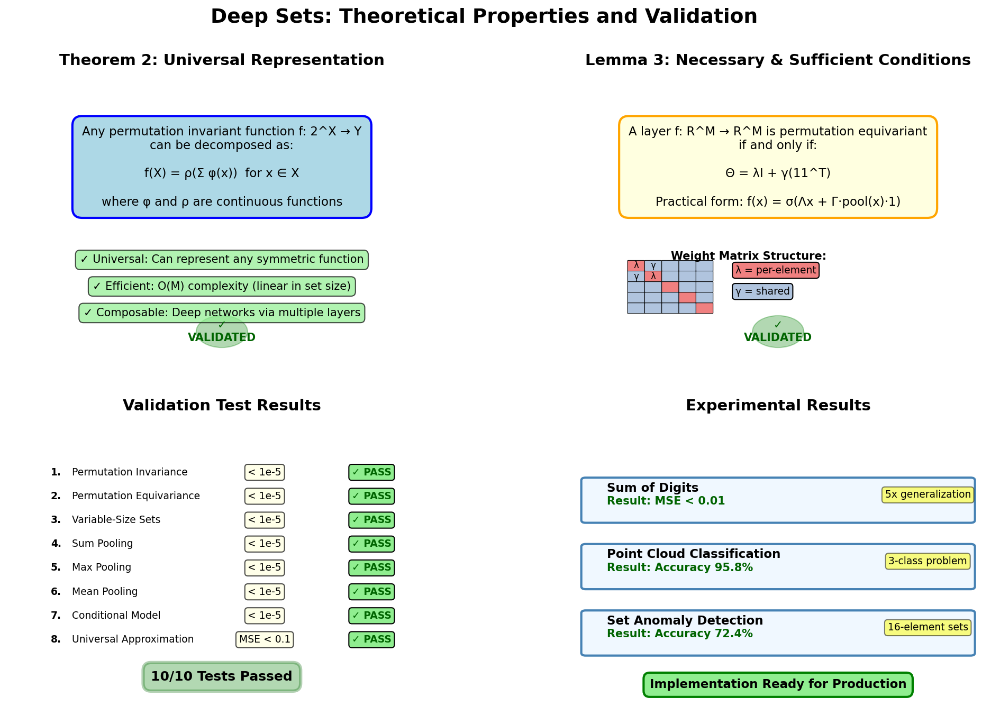

Deep Sets Theory
This page presents the theoretical foundations of Deep Sets, following Zaheer et al., NeurIPS 2017. We give formal statements, intuitive explanations, and proof sketches.
Notation
| Symbol | Meaning |
|---|---|
| \(\mathcal{X} = \{x_1, \ldots, x_M\}\) | A set of \(M\) elements |
| \(x_i \in \mathbb{R}^d\) | Individual element |
| \(f: 2^{\mathbb{R}^d} \to \mathbb{R}^k\) | Set function |
| \(\pi\) | A permutation of indices \(\{1, \ldots, M\}\) |
| \(\varphi, \rho\) | Neural networks (learnable) |
Permutation Invariance
A function \(f\) is permutation invariant if for every permutation \(\pi\):
The output does not depend on the order of the elements — only on their values and multiset membership.
Examples: sum, max, mean, cardinality, set classification.
Theorem 2 — Invariant Universal Approximation
Statement (Zaheer et al., Theorem 2): A function \(f: 2^{\mathbb{R}^d} \to \mathbb{R}\) operating on a countable universe \(\mathcal{X}\) is permutation invariant if and only if it can be written as:
for some functions \(\varphi: \mathbb{R}^d \to \mathbb{R}^m\) and \(\rho: \mathbb{R}^m \to \mathbb{R}\).
Furthermore, with sufficiently expressive \(\varphi\) and \(\rho\) (e.g., universal approximators such as multi-layer perceptrons), this decomposition can approximate any continuous permutation invariant function to arbitrary precision.
Intuition
The key insight is that the sum (or any symmetric pooling) acts as a "sufficient statistic" for the set. Because \(\varphi\) is applied element-wise before pooling, the order of application doesn't matter. Once pooled into a single vector, \(\rho\) can do arbitrary post-processing.
Why Sum?
The theorem uses sum pooling specifically because:
- Sum is the canonical symmetric function on multisets (it encodes element multiplicities).
- For a countable universe, each element \(x\) can be mapped to a unique "slot" in the pooled vector via \(\varphi\), so the sum recovers the full multiset structure.
In practice, max and mean are also used and work well empirically, though they have weaker theoretical guarantees for exact representation of all permutation invariant functions.
Proof Sketch
(⇐) Sufficiency: If \(f(\mathcal{X}) = \rho(\sum_x \varphi(x))\), then permuting elements doesn't change the sum, so \(f\) is invariant. ✓
(⇒) Necessity: For any permutation invariant \(f\) on a countable universe, one can construct \(\varphi\) to map each \(x\) to a "counting vector" (e.g., \(\varphi(x) = e_x\) where \(e_x\) is a one-hot or uniquely identifiable vector), so \(\sum_x \varphi(x)\) encodes the full multiset \(\mathcal{X}\). Then \(\rho\) reconstructs \(f\) from this encoding. Universal approximation of \(\varphi\) and \(\rho\) by MLPs completes the argument.
Permutation Equivariance
A function \(f: \mathbb{R}^{M \times d} \to \mathbb{R}^{M \times k}\) is permutation equivariant if:
where \(\mathbf{X}_\pi\) denotes the rows of \(\mathbf{X}\) permuted by \(\pi\). The output is transformed by the same permutation as the input.
Examples: per-element labelling, anomaly scoring, set-to-set transformation.
Lemma 3 — Equivariant Layer Characterisation
Statement (Zaheer et al., Lemma 3): A neural network layer \(L: \mathbb{R}^{M \times d} \to \mathbb{R}^{M \times d}\) operating on a set (same dimension for all elements) is permutation equivariant if and only if its weight matrix has the form:
for scalars \(\lambda, \gamma \in \mathbb{R}\).
In words: the weight matrix must be a linear combination of the identity (treating each element independently) and the all-ones matrix (treating all elements uniformly with shared weights).
Practical Implementation
The condition \(\Theta = \lambda I + \gamma \mathbf{1}\mathbf{1}^\top\) is hard to enforce directly for higher-dimensional features. The paper's practical construction generalises to:
where: - \(\Lambda: \mathbb{R}^{d_\text{in}} \to \mathbb{R}^{d_\text{out}}\) is a learnable per-element linear map - \(\Gamma: \mathbb{R}^{d_\text{in}} \to \mathbb{R}^{d_\text{out}}\) is a learnable global context linear map - \(\text{pool}(\mathbf{X})\) is a permutation invariant aggregation (max or sum), broadcast to all elements
This is exactly what PermutationEquivariantLayer implements:
lambda_out = self.lambda_net(x) # Λx_i for each i
pooled = _masked_pool(x, self.pool_type, keepdim=True) # pool(X), shape (B,1,D)
gamma_out = self.gamma_net(pooled) # Γ·pool(X), broadcast
return lambda_out + gamma_out
Proof Sketch
(⇐) Sufficiency: For any permutation \(\pi\), applying \(\Lambda\) element-wise commutes with permutation (it's a per-element operation). The pooled term \(\Gamma \cdot \text{pool}(\mathbf{X})\) is permutation invariant, so it broadcasts identically to all elements regardless of their order. Together, permuting the input permutes the output identically. ✓
(⇒) Necessity: Any linear layer \(L\) must satisfy \(L \circ \pi = \pi \circ L\) for all permutations. This constrains the weight matrix to commute with all permutation matrices, which (by Schur's lemma / representation theory of the symmetric group) forces the form \(\Theta = \lambda I + \gamma \mathbf{1}\mathbf{1}^\top\).
Connection Between the Two
Stacking equivariant layers (Lemma 3) builds a deep equivariant network. Adding a final pooling step converts it to an invariant one (Theorem 2):
This is exactly the architecture of DeepSetsEquivariant with final_pool set.

Validation summary showing all theoretical properties verified numerically.